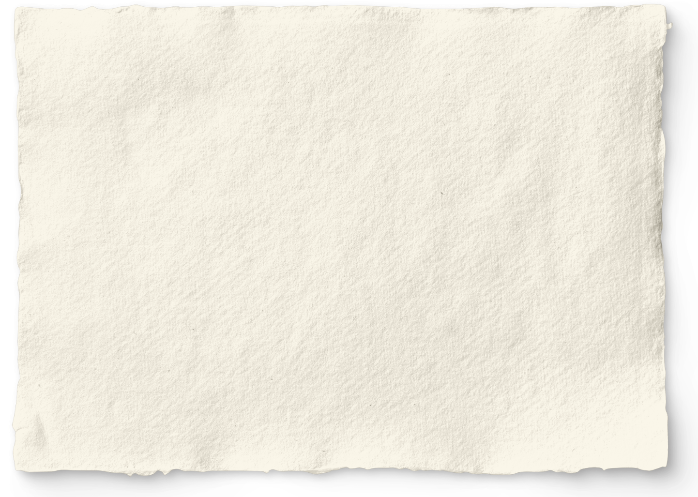

In-House Instrument · v1.8.0
Composure
A MIDI engine with a
collaborator inside.
Composure models a song as sixteen role-labeled channels on one virtual device, not as a timeline of tracks. Four carry default roles — Drums, Bass, Chords, Melody. The other twelve are open. Address one voice and the others hold.
It is two things at once, and it is worth saying both plainly. On Android it is a sonic sketchbook you carry. On desktop and Android together it is an agentic collaborator for production and recording — an instrument built from the first file to be played by something that is not you.